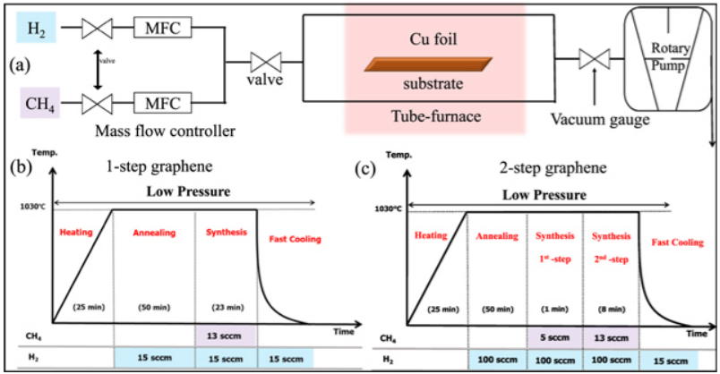 Nanoscale layer of a minimized defect area of graphene and hexagonal boron nitride on copper for excellent anti-corrosion activity - [NANOTECHNOLOGY]
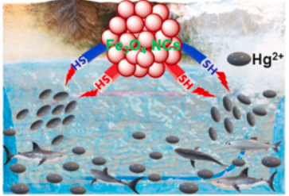 An environmentally benign synthesis of Fe3O4 nanoparticles to Fe(3)O4 nanoclusters: Rapid separation and removal of Hg(II) from an aqueous medium - [CHEMOSPHERE]
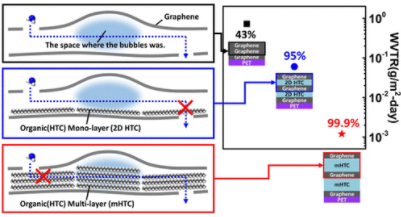 Two-Dimensional Stacked Composites of Self-Assembled Alkane Layers and Graphene for Transparent Gas Barrier Films with Low Permeability - [NANO LETTERS]
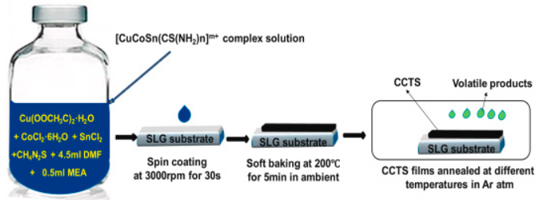 Temperature-Time profile effects on evolution of physical and electronic properties in visible light Cu2CoSnS4 photodetectors - [MATERIALS SCIENCE IN SEMICONDUCTOR PROCESSING]
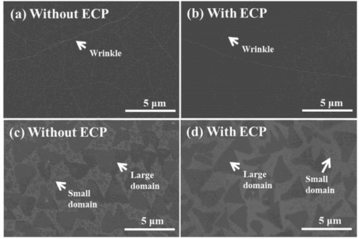 Gas Barrier Performance of Hexagonal Boron Nitride Monolayers Grown on Copper Foils with Electrochemical Polishing - [APPLIED SCIENCES-BASEL]
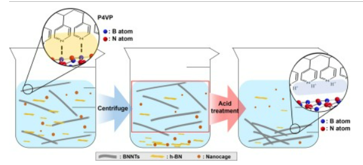 Purification of boron nitride nanotubes by functionalization and removal of poly(4-vinylpyridine) - [APPLIED SURFACE SCIENCE]
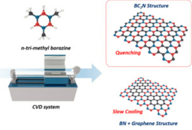 Dominant formation of h-BC2N in h-BxCyNz films: CVD synthesis and characterization - [CARBON]
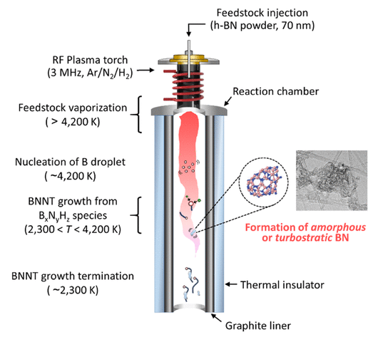 Insight into BN Impurity Formation during Boron Nitride Nanotube Synthesis by High-Temperature Plasma - [ACS Omega]
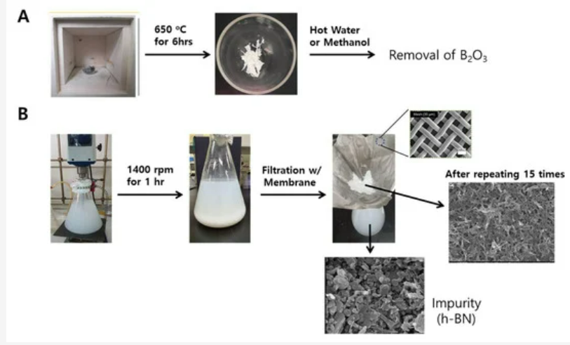 Purification of boron nitride nanotubes enhances biological application properties - [International Journal of Molecular Sciences]
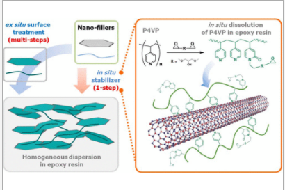 Effect of Polymeric In Situ Stabilizers on Dispersion Homogeneity of Nanofillers and Thermal Conductivity Enhancement of Composites - [Langmuir : the ACS journal of surfaces and colloids]
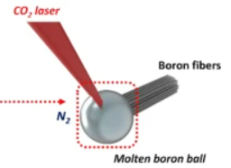 Single- and double-walled boron nitride nanotubes: Controlled synthesis and application for water purification - [Scientific Reports]
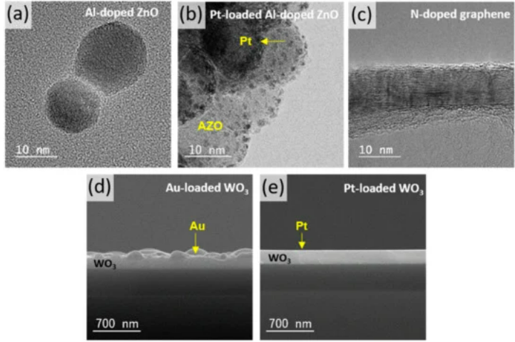 Selective Detection of Nitrogen-Containing Compound Gases - [SENSORS]
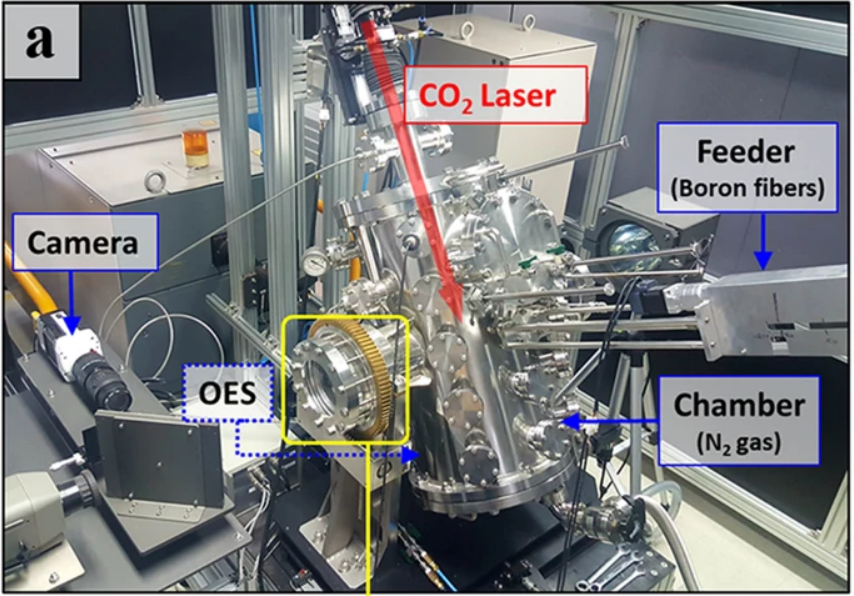 Dual growth mode of boron nitride nanotubes in high temperature pressure laser ablation - [SCIENTIFIC REPORTS]
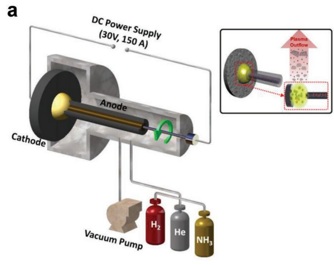 High Areal Capacitance of N-Doped Graphene Synthesized by Arc Discharge - [ADVANCED FUNCTIONAL MATERIALS]